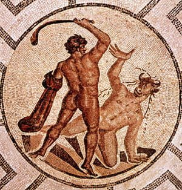
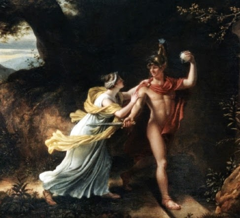

This is a story of a man called Theseus, destined to become one of the greatest heroes in Greek mythology.

Our story starts with Poseidon (or Zeus, there are many variations) and King Minos of Crete. Poseidon sent from the sea a ferocious bull for Minos to sacrifice to him. Minos, however, was rather taken with the bull and wanted to keep him as a stud for his cattle so he sacrificed a different animal and hoped Poseidon wouldn’t notice.
It was always foolish to trick a god and hope they wouldn’t notice, and low and behold, Poseidon saw straight through Minos’ trickery. As punishment, he cursed Minos’ wife, Pasiphaë, with a mad passion for the bull. Pasiphaë went to Minos’ master craftsman, Daedalus (father of Icarus - the one who flew too close to the sun), and he built a wooden cow which she could clamber into and well…you know…mate with the bull.
The result of this rather twisted and bestial coupling was the Minotaur, a beast with the body of a man and the head of a bull. Minos didn’t want to kill the Minotaur so he turned to his trusty craftsman Daedalus to build a vast labyrinth at the Minoan Palace of Knossos (the backdrop of this page is a modern day picture of the site) and hid the Minotaur there.
Legend has it that the people of Athens had to send seven youths and seven maidens to the Minotaur every year as compensation for Minos’ son, Androgens, being killed in the Panathenaic games in Athens (he was killed during the Marathon by the bull that impregnated his mother, Pasiphaë). These fourteen Athenians were sent into the labyrinth and, given it was such a complicated construction of chambers and corridors, no one ever found their way out alive.

Enter Theseus, son of Aegeus King of Athens. Theseus decided to be one of the seven young men that would go to Crete, in order to kill the Minotaur and end the human sacrifices. Theseus promised his father he would put white sails upon his return from Crete, so his father would know that he was coming back alive. The boat would return with black sails if Theseus was killed.
When Theseus reached Crete, he met Minos’ beautiful daughter, Princess Ariadne, who fell head over heels in love as soon as she clapped eyes on him. She decided to help him and gave him a ball of thread to help him find his way out of the labyrinth once he killed the Minotaur.
After Ariadne helped Theseus defeat the Minotaur and escape, they sailed away together, however, he promptly abandoned her on the island of Dia (Naxos). There are a few variations to this part of the story; some say Dionysus made him do it as he rather fancied her for himself, some that Theseus was in love with someone else, and others that he simply forgot her and didn’t realise until he was half way to Athens.
For whatever reason, Theseus continues on his journey back home to Athens without Ariadne, however, he forgets to change the black sails for white ones (hello Karma). Aegeus, who was waiting for Theseus’ return at the top of the Acropolis, saw the black-sails and, thinking his son was dead, threw himself into the sea below and drowned. According to the myth, this is why that sea is names the Aegean Sea to this day.